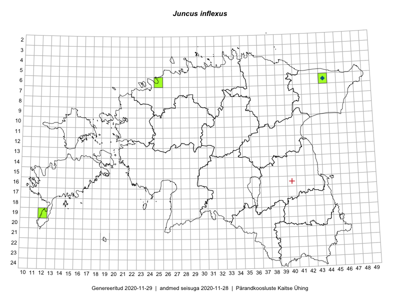

Juncus inflexus
Uuendatud: 2016-12-01
Kaardile koondatud taksonid: Juncus inflexus L.

Kaart põhineb 7 kirjel, neist vaatlusi 6 ja eksemplare 1.
Viited andmebaasikirjetele
- Peedu Saar, Liina Oja: 2015-07-21: 06-44: GPS punkt
- Peedu Saar, Liina Oja: 2015-07-21: 06-44: GPS punkt
- Toomas Kukk, Meeli Mesipuu, Thea Kull, Eerik Leibak, Peedu Saar: 2014-07-11: 06-44: ala
- Toomas Kukk, Peedu Saar, Thea Kull, Meeli Mesipuu, Eerik Leibak: 2014-07-11: 06-44: GPS punkt
- Toomas Kukk, Peedu Saar, Thea Kull, Meeli Mesipuu, Eerik Leibak: 2014-07-11: 06-44: GPS punkt
- Toomas Kukk, Peedu Saar, Thea Kull, Meeli Mesipuu, Eerik Leibak: 2014-07-11: 06-44: GPS punkt
- Peedu Saar, Liina Oja: 2015-07-21: 06-44: GPS punkt